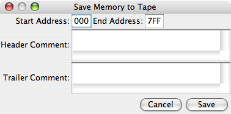

SMILemu
An Emulator for Siffermaskinen i
Lund
Version 1.2
Copyright © 2005–2007 Christian Brunschen
If you wish to quickly delve into the SMIL emulator, please see the Quick Start document.
This manual accompanies SMILemu, an emulator for the SMIL computer, which was built in Sweden in 1956. SMIL was one of several computers around the world based on the IAS Machine architecture. SMILemu is intended to emulate the experience of using SMIL as faithfully as possible, and should serve as a general example of the experience of using a computer 5 decades ago (as of the writing of this manual, in December 2005).
I will describe the SMIL computer itself, with some information about its background and its architecture, at least to give a sufficient understanding for the purpose of using the emulator and using and perchance even writing programs for SMIL.
This is not the first emulator for SMIL. In 1991, Lars Gislén at the Department of Theoretical Physics at Lund University wrote an emulator for the Macintosh. He has been most kind to allow me access to his source code as well as to copies of his own research material into SMIL, for the development of SMILemu. All of the sample SMIL programs included with this emulator were originally written for and included with Lars Gislén's emulator, and my emulator retains file format compatibility with its tape files. That said, in the 14 years that have passed between the two emulators' implementations, computers have gotten faster, received more memory and better graphics. Due to all of these advancements, the current emulator can offer a more supportive user environment, and indeed offer better performance in spite of being written in Java; and by being written in Java it is also portable, even in binary form, to many different platforms.
The SMIL computer is an example of an early computer, one of what is today commonly referred to as the 'first generation' of computers. Since then, many things have happened, and our understanding of what computers need to do has grown, and these lessons learned have of course been incorporated into the computers that are in general use today. For this reason, SMIL's architecture, design, instruction set and so on all show both similarities with and differences from those one would find in modern-day (early 21st century) computers. Let's take a look at SMIL, both from a historical and from a more technical point of view.
SMIL is the short form name of an early (1956) Swedish computer, and is the acronym of the computer's full name, Siffermaskinen i Lund, 'the Lund Digital Machine'. SMIL was built at the university of Lund in southern Sweden, as a copy of the even earlier (1953) Swedish computer BESK, Binär Elektronisk Sekvens-Kalkylator, 'binary electronic sequence calculator'. BESK's, and thus SMIL's, design were based on the IAS Machine design, as described in the 1954 Final Progress Report on the Physical Realization of an Electronic Computing Instrument by Herman H. Goldstine, James H. Pomerene and Charles V. L. Smith, of the Institute for Advanced Study Electronic Computer Project, or more specifically, on earlier drafts of that document. These early drafts of this report were widely circulated in circles interested in computers, and was used as the basis for a number of different computers throughout the world, including the USA, the UK, the Soviet Union, and in the shape of BESK and its successors, in Sweden. As the Final Progress Report only outlines the general architecture of a computer but does not go into certain more low-level issues of implementation, such as the precise mapping of instruction codes to instructions, most IAS machines are incompatible with one another. While SMIL and other BESK derivatives (such as the Danish computer DASK, and Datasaab's SARA) were based not only on the architecture but also on the implementation of BESK, there were marked similarities between them, moreso than between most IAS machines - though in each case, lessons learned in the construction of its predecessors would influence both the design and the implementation of the new machine. SMIL initially had a tape reader as its sole input device, a typewriter as its sole output device, and a drum containing 2048 words of memory, which is only half of SMIL's 12-bit address space. SMIL was later upgraded with the full 4096 words of core rather than drum memory, an external memory, external magnetic tape storage, a punched card reader and an improved printer.
SMIL, like IAS machines in general, has a word size of 40 bits. This means that each individually addressable memory unit is 40 bits in size. The register size is also 40 bits. SMIL uses a von Neumann architecture, where instructions and data are stored together in the same memory. The bits within a word are numbered from 0 for the most significant bit to 39 for the least significant bit.
Instructions, however, are only 20 bits wide. Thus, two instructions are stored in each word in memory — one 'left' instruction, in bits 0 to 19, and one 'right' instruction in words 20 to 39. The format of each instruction may appear somewhat unusual when viewed with modern eyes: 12 bits for the memory address that the instruction refers to (if applicable), followed by 4 bits that choose the instruction to execute, and a further 4 'extra' bits which specify options within the selected instruction.
As each instruction must be able to address the entire memory, SMIL's address space is 12 bits wide, for a total of 4096 different addresses. However, with two words per instruction, SMIL must keep track of which half of the word to actually execute. The instruction counter thus contains 13 bits — 12 for the actual address, and one extra to indicate whether to execute the left or right instruction within the word.
SMIL uses a fixed-point representation of real numbers for its arithmetic unit. Each 40-bit word is used to represent a number in the range [−1.0 ... 1.0), i.e, from −1.0 inclusive to 1.0 exclusive. How are these numbers represented in SMIL's 40-bit binary words?
To represent a fractional number in binary, SMIL uses the same method as generally in use with the decimal system: a 'binary point' is defined (analogously to the 'decimal point'. Digits to the left of the binary point contribute whole values to the number; digits to the right contribute fractional values. Just as the decimal fraction '405.39' can be written as (4×102 + 0×101 + 5×10 0+ 3× 10 −1 + 9×10−2), the binary fraction '101.01' can be written as (1×22 + 0×21 + 1×20 + 0×2−1 + 1×2−2) which comes together as five and one quarter (or '5.25' as a decimal fraction). The designers of SMIL followed the design of the IAS machine in choosing to place the 'binary point' between bits 0 and 1 of SMIL's word.
As described above, SMIL would have a range of numbers from binary 0.00000... to 1.11111..., which would be in decimal, from 0.0 to 1.9999... (or more exactly, 2 − 2−39). However, there is also a need to represent negative number, as they are very common in scientific calculations. To represent negative numbers, SMIL uses what is known as 'two's complement notation'. Simply put, two's complement offers a way to represent negative numbers uniquely by inverting every bit in the word (which gives the 'ones complement') and adding one. For instance, if we wish to represent −5 in a four-bit word, we would start with a word containing 5 (0101), invert every bit (giving '1010') and add one, giving '1011'. Two's complement has the very desirable and useful property that each number is only represented exactly once, so each number is unique (whereas choosing one's complement would have meant that there would be two different 'zero' values, represented by 'all zeroes' and 'all ones'). It also turns out that the most significant bit in every positive number is zero, and the most significant bit of every negative number is one — in effect, the most significant bit (bit 0 on SMIL) can be used as a 'sign bit' which indicates at a glance whether any given number is positive or negative. And finally, using two's complement a subtraction, a − b, can be performed by adding a and the two's complement of b. This significantly simplifies the implementation of the arithmetic unit, which makes the computer simpler and less expensive.
Using two's complement, but keeping the binary point in the same place, SMIL's numeric range now becomes [−1.0 ... 1.0): −1.0 can be exactly represented as the 40-bit value '1000 0000 0000 0000 0000 0000 0000 0000 0000 0000', whereas the largest positive value is '0111 1111 1111 1111 1111 1111 1111 1111 1111 1111', which is equal to 1 − 2−39 — and that is as close as SMIL gets to 1.0.
With two's complement notation as used in SMIL, there are two special cases, which behave: 0.0 slightly different than the rest: and −1.0. To see why and how they are special, we look at each case on turn, using a four-bit word size in any examples:
SMIL has 5 registers that the user will generally interact with:
| Register | Description | Notes | |||
|---|---|---|---|---|---|
| MD | Multiplikand | Multiplicand | Holds values read from memory for use in arithmetic operations | ||
| AR | Ackumulator | Accumulator | |||
| MR | Multiplikator | Multiplicator | |||
| IR | Instruktionsregister | Instruction register | Holds the word containing the two instructions, one of which is to be executed next | ||
| KR | Kontrollräknare | Program Counter | Holds the memory address of the next instruction to be executed, as well one bit to indicate whether to execute the left or right instruction in IR | ||
The arithmetic unit used offers support for addition and complementation, logical multiplication (the 'logical and' operation) as well as multiplication and division within SMIL's fixed-point number format restrictions. The addition and multiplication operations may result in an arithmetic overflow, if the result lies outside the [−1 ... 1) range of SMIL's fixed-point format. To signal this, the AR (accumulator) register has an extra bit, '00', which contains the expected sign of the result of the operation. If after a given operation bits 00 (the expected sign) and bit 0 (the actual sign) differ, there has been an overflow. Conditional instructions permit the programmer to take appropriate action if this the case.
Addition operates very straightforwardly, adding the contents of MD to AR. In order to perform a subtraction, the contents of MD can be complemented on its way to the arithmetic unit, under program control.
Logical multiplication, also known as 'logical and', is performed between individual bits of the MD and AR register, with the result placed in AR. Again, the programmer can choose to complement MD's contents on the way to the arithmetic unit.
Multiplication is performed on the contents of the MR (multiplicator) and MD (multiplicand) registers. Because a multiplication generally results in as many significant digits as the sum of the significant digits in the multiplicator and multiplicand, the result requires two registers. Specifically, the most significant part of the result remains in AR, and the least significant part in MR. There is also an instruction that retains only the most significant part in AR, and discards the least significant part.
The actual multiplication algorithm performs 39 identical steps:
Division is performed on the contents of AR, by the contents of MD, with the result placed in MR, but in bit-reversed order. To get the result in useful format, a special instruction (N28) is used to reverse the contents of MR into AR.
The actual algorithm performs 39 identical steps similarly to the multiplication algorithm, though in this case the steps are different:
The instruction set chosen for SMIL comprises 13 different instruction groups, with the 'extra' bits specifying different options for or variants of the instruction in question. Two of the extra bits have a common meaning across all instructions: Bit e3 (the second least significant bit in any instruction half-word) is used to signify that the AR register should be cleared before executing the rest of the instruction. Similarly, bit e4 (the least significant bit) signals a 'conditional stop' location, and instructs SMIL to halt after executing this instruction if the left toggle switch on the control panel is in the 'Stopp Villk.' ('Stop Condition') position. This bit essentially allows the programmer to set a simple form of breakpoint, which can be enabled by setting the appropriate toggle switch position the control panel. The bits e1 and e2 are used by each individual instruction group to specify the specific operation to perform.
Instructions are most easily described in the format 'NXY', where N refers to the address part of the instruction (12 bits, 3 hex digits), X shows to the instruction code (4 bits, 1 hex digit) and Y shows the extra bits (4 bits, 1 hex digit), with the caveat that bits e3 and e4 may be specified in addition to what is shown (though in some cases, bit e3 is explicitly listed). In this format, this is the complete SMIL instruction set, grouped by instruction type. In this listing, [N] refers to the contents of memory location N, NL refers to the Left instruction at address N, and NR refers to the Right instruction at address N.
| Tape Input | ||
|---|---|---|
| N00 | Read one word from Tape Reader into AR, and store at address N | |
| N04 | Read one word from Tape Reader into AR (N ignored) | |
| N08 | Read one tape row — 4 bits — from Tape Reader into AR36...39 (N ignored) | |
| Logical Product ('And') | ||
|---|---|---|
| N10 | (AR + [N]) ∧ MR → AR, 0 → MR | |
| N14 | (AR − [N]) ∧ MR → AR, 0 → MR | |
| N18 | (AR + |[N]|) ∧ MR → AR, 0 → MR | |
| N1C | (AR − |[N]|) ∧ MR → AR, 0 → MR | |
| Register Transfer | ||
|---|---|---|
| N20 | MR → AR | |
| N28 | MR0...39 → AR39...0. Note: This is the 'reverse MR into AR' instruction used to retrieve a division result. |
|
| Store | ||
|---|---|---|
| N30 | AR → N | |
| N34 | AR0...11 → N0...11 | |
| N38 | AR20...31 → N20...31 | |
| N3C | AR0...11,20...31 → N0...11,20...31 | |
| Addition to AR and MR | ||
|---|---|---|
| N40 | AR + [N] → AR, MR | |
| N44 | AR − [N] → AR, MR | |
| N48 | AR + |[N]| → AR, MR | |
| N4C | AR − |[N]| → AR, MR | |
| Addition to AR only | ||
|---|---|---|
| N50 | AR + [N] → AR | |
| N54 | AR − [N] → AR | |
| N58 | AR + |[N]| → AR | |
| N5C | AR − |[N]| → AR | |
| Multiplication | ||
|---|---|---|
| N60 | MR × [N] + AR × 2−39 → AR, MR | |
| N72 | MR × [N] + 2−40 → AR Single precision |
|
| Division | ||
|---|---|---|
| N80 | AR ÷ [N] → MR39...0 | |
| Jumps | ||
|---|---|---|
| N90 | Jump to NL | |
| N94 | Jump to NR | |
| N98 | Jump to NL if AR00 ≠ AR0 | |
| N9C | Jump to NR if AR00 ≠ AR0 | |
| NA0 | Jump to NL if AR ≥ 0 | |
| NA4 | Jump to NR if AR ≥ 0 | |
| NA8 | Jump to NL if AR < 0 | |
| NAC | Jump to NR if AR < 0 | |
| Control Flow | ||
|---|---|---|
| NB0 | halt execution (N ignored) | |
| NB8 | no operation (N ignored) | |
| Normalization | ||
|---|---|---|
| NC0 | Shift AR left until AR0 ≠ AR1. Steps
shifted × 2−31 → MR AR = 0 ⇒ 63 × 2−31 → MR |
|
| Shifts | ||
|---|---|---|
| ND0 | Shift AR left N steps | |
| ND8 | Shift AR right N steps arithmetically (maintaining sign bit) | |
| NDC | Shift AR right N steps (shifting in zeros) | |
| Typewriter output | |||||||||||||||||||
|---|---|---|---|---|---|---|---|---|---|---|---|---|---|---|---|---|---|---|---|
| NF0 | Print AR36...39 as a hexadecimal character (N ignored) | ||||||||||||||||||
| NF8 | Print typographical character N Typographical characters are:
|
||||||||||||||||||
SMIL's main memory consists of a rotating brass drum, coated with iron oxide, the same material used in audio and video tapes for magnetic storage. Along this cylinder, 82 read/write heads are placed. 80 bits are used for data, divided into two 'halves', each holding one complete 40-bit word. The remaining two are used for timing: One, the clock pulse channel, was divided into 1024 cells, each containing a magnetic dipole (1-0 combination) to allow locating individual data row. The second, the reference pulse channel, contains only a single dipole, which is used to locate the beginning of a revolution on the drum.
The reference and clock pulses are used to control a counter, which keeps track of the row currently available to read from or write to. The reference pulse resets the counter to zero at the beginning of each revolution, while the clock pulse increments the counter by one for each row on the drum that passes by.
SMIL's memory range is 12 bits = 4096 different addresses. However, SMIL's drum memory only contains 1024 rows, each containing 2 words, for a total of 2048 words - the original SMIL has some room for memory expansion. To address a specific word in the drum, the most significant bit of the address is ignored, the next bit is used to select one half of the drum, and the remaining ten bits are used to select one of the 1024 drum rows.
The drum itself rotates at circa 5800 rpm; a new clock pulse is generated 100000 times per second, every 10 µs.
SMIL's instruction cycle can be partitioned into a small number of distinct phases, each with distinct time requirements. Not all instructions go through all phases, of course. Only those instructions that perform actual I/O - specifically, the instructions to read data from tape and to write data to the typewriter - perform any Asynchronous I/O; Only instructions that read from or write to memory need to wait for that memory location; Only long instructions (multiplication, division) go through the long instruction execution phrase; and if the next instruction is already in the instruction register, then there may not be any need to wait for its memory location. All of this is summarized in detail in this table where each phase's execution time is shown, and the phases for each instruction are marked with '♦'.
| Phase | Execution time | Instructions | |||||||||||||||||||
|---|---|---|---|---|---|---|---|---|---|---|---|---|---|---|---|---|---|---|---|---|---|
| 00 | 04,08 | 1 | 2 | 3 | 4 | 5 | 6 | 7 | 8 | 9 | A | B0 | B8 | C | D | E | F | ||||
| a | Prepare Instruction | 6 clock pulses = 60 µs | ♦ | ♦ | ♦ | ♦ | ♦ | ♦ | ♦ | ♦ | ♦ | ♦ | ♦ | ♦ | ♦ | ♦ | ♦ | ♦ | ♦ | ♦ | |
| b | Asynchronous I/O | not predictable | ♦ | ♦ | | | | | | | | | | | | | | | | | | | | | | | | | | | | | ♦ | ||
| c | Await memory location | 0–1024 clock pulses = 0–10240µs | ♦ | | | ♦ | | | ♦ | ♦ | ♦ | ♦ | ♦ | ♦ | | | | | | | | | | | | | | | ||
| d | Short Instruction Execution | 9 clock pulses = 90 µs | ♦ | ♦ | ♦ | ♦ | ♦ | ♦ | ♦ | ♦ | ♦ | ♦ | ♦ | ♦ | ♦ | ♦ | ♦ | ♦ | ♦ | ||
| e1 | Long Instruction, fixed time | 43 clock pulses = 430µs | ♦ | ♦ | ♦ | ♦ | ♦ | | | | | | | | | ||||||||||
| e2 | Long Instruction, variable time | 4–43 clock pulses for 0–39 shifts = 40–430µs | | | | | ♦ | ♦ | |||||||||||||||
| f | Await next instruction | 0–1024 clock pulses = 0–10240µs | ♦ | ♦ | |||||||||||||||||
SMIL was operated from a single Control Panel connected directly to the CPU, with the Tape Reader and Typewriter easily accessible. Additionally, one of the bits inside SMIL was connected to a loudspeaker, placed in the bottom center of the control panel, through which the operator could listen to SMIL's operation. The volume of the generated sound is adjusted through a volume control to the right of the speaker. Previously, these items were displayed in SMILemu for decoration only, but as of SMILemu 1.2, sound is finally emulated. Unfortunately, the author has been unable to gain certainty about which bit of SMIL was connected to the speaker, and precisely how the sound would be generated from this bit. At the 50th anniversary celebrations in Lund in 2006, it was suggested that it was bit 38 of the AR register that was connected to the speaker, so this is the default bit that is connected (but see below). In order to have some sound generation, the value of this bit is translated into a simple square wave, with bottoms whenever the bit is zero, and tops whenever the bit is one. This may not, in fact, give an accurate representation of what SMIL sounded like, but it is the closest I am able to achieve at this time, and without more, clearer information on the subject.
Whereas sound generation in SMIL was hardwired to one particular bit, SMILemu lets you choose which bit to use for generating sound: Any bit in any one of the registers can be chosen. The generation of sound can also be turned off entirely. See the Sound pane of the Options window for details.
SMIL contained approximately 2000 vacuum tubes of 10 different types. The average expected life of any such vacuum tube was approximately 5000 hours, and through measurements and preventive maintenance, large amounts of unexpected downtime were prevented; this included running test programs which exercised parts of SMIL with the same instructions under differing conditions.
SMIL also contained circa 200 germanium diodes. The total heat dissipated by the machine was approximately 12 kW, which was transported away by two fans at a circulation of 4000 m3 per hour.
The SMIL emulator SMILemu attempts to emulate the initial, unexpanded version of SMIL as faithfully as possible, given the information available, including its actual operating speed and its operation using a binary lights-and-push buttons control panel — labeled in the original Swedish, of course. It is implemented in Java 5, and should run on any compatible virtual machine and runtime environment. It uses a graphical user interface (GUI) based on the standard Java Swing components as well as some bespoke components, in particular for the control panel itself, but it should be straightforward to use for anyone familiar with operating modern graphical user interfaces in general.
I wrote SMILemu starting in late 2005 based on general interest in early computers, more specifically because 2006 would be SMIL's 50th anniversary, and in order to be able show students at Lund University and Lund Institute of Technology (and in particular members of its computer club, of which I was an early member) what progress has been made in computing in a mere 50 years — less than the average life expectancy — especially keeping in mind that 50 years ago, there was only one SMIL computer available in all of Lund.
SMILemu is made available in three forms:
To run SMILemu.app under Mac OS X 10.4 or later with Java 5 installed, you only need to double-click it, which will locate the appropriate Java 5 runtime and launch the emulator. On other platforms such as Microsoft Windows XP, you may be able to double-click SMILemu-1.2.jar, which in turn launches the Java Runtime and the emulator. Otherwise, you may have to manually launch the emulator from a commend-line terminal, usually with the command
java -jar SMILemu-1.2.jarIf you are using an older version of Mas OS X and have managed to install Java 5 anyway, you may have to invoke the Java virtual machine directly, using
/System/Library/Frameworks/JavaVM.framework/Versions/1.5.0/Home/bin/java -jar SMILemu-1.2.jar
Once SMILemu has started, you will be presented with its three default windows. All windows can be resized, and will act in whatever way is most suitable.
The Control Panel is the operator's main interface for working with SMIL. As you can see, the interface is entirely based on lights and push buttons, with the exception of two toggle switches at the bottom right of the panel.
The top of the panel is dominated by four almost, but not quite, identical rows of 40 lights. The first three represent the three registers involved in arithmetic and logical operations, from top to bottom:
Each register also has a push button to the left and one to the right, marked 'Noll' (Swedish for 'zero'), which will clear to zero the left and right half of the register, respectively. The MD and AR registers, but not the MR register, also have individual push buttons underneath each bit of register content, which allow setting each individual bit to one. If you accidentally set a bit to one that you had not intended to, you need to clear the appropriate half of the register using its Noll button, and manually set all the ones again as necessary.
Below the three arithmetic registers is the instruction register, IR. Like MD and AR, it has a full complement of both lights and buttons for each bit in the register. Its bits are not marked 0 to 39, however, but are instead labeled by their use within an instruction: The first 12 bits in each half-word are labeled 'Adress' (Swedish for 'address'), the next four bits are marked 'Operation' (which needs no translation), and the final four bits are labeled individually as e1, e2, e3, and e4. Again, there is one button on each side to clear either half-word, marked 'Noll'.
The final row of lights-and-buttons contains a number of groups, and even individual lights and buttons. We only care about the largest group of these, at the center of the row, between two labels marked 'KR'. This group of a total of 13 bits, marked '11' to '0' and then '00', contain the contents of the KR register, which is the program counter. Just to the left of bit 11 is the 'clear' button for KR, marked 'Noll' as usual. The first 12 bits, bits 11 to 0, contain the memory address of the next instruction to be executed; bit 00 indicates whether to execute the left or right instruction of the word (if bit 00 is zero, the left instruction is indicated; if bit 00 is 1, the right instruction). The careful observer will note the presence of two lights with buttons, marked 'V' and 'H', just to the right of KR's bit 00. 'V' is short for 'Vänster', which is Swedish for 'left'; 'H' is short for 'Höger', which is Swedish for 'right'. These two lights also indicate which half is to be executed next: 'V' will be lit whenever the left instruction is a left instruction, and 'H' will be lit whenever the next instruction is a right instruction. These two lights and their buttons are in other words intimately connected to KR's bit 00, but they offer a quicker at-a-glance view which half of the instruction will next be executed, than does one bit among many (such as bit 00 next to the other 12 KR bits).
Of the remaining lights and buttons on the final row, only two more have any actual function within the SMIL emulator: The leftmost light, labeled , is lit only while the emulated SMIL is running. It probably served a different purpose on the original SMIL, but here I have hijacked it for this particular bit of functionality. Finally, the button labeled 'Återställ' (which is Swedish for 'reset') just to the left of KR's Noll button resets all of SMIL's registers and all of its memory contents zero, which is the same state that SMIL is in immediately after it has been started. The remaining lights and buttons on this row have functions that I cannot discern or discover. Each button is connected to the corresponding light, so you can, if you wish, turn the lights on (and reset them to zero using the 'Återställ' button), but they will not affect the function of the emulated SMIL in any way.
Below these five register rows is the bottom part of the panel, which contains, from left to right, the following:
When the Control Panel Window is resized, the Control Panel will be drawn centered within the window at its maximum possible size, at its proper aspect ratio. You can make the Control Panel as big or as small as you wish; it will continue functioning as best possible.
The Tape Reader shows a visual representation of a tape loaded into SMIL's tape reader. The tape has a series of tractor holes, one in each potential data row. Each row has 5 positions, where a hole in any given position represents a '1', and the absence of a hole represents a '0'. When SMIL reads a tape, it uses the bottom-most of the 5 holes to indicate that the other 4 holes contain valid data. In other words, any row whose the bottom-most hole is punched contains 4 bits of actual data for SMIL, whereas any row not having the lowest row punched is simply ignored. This allows us to easily separate groups of 4-bit-data rows on the tape with empty, non-data-carrying rows. For that matter, more empty space can be left, to allow space for writing human-readable comments.
The SMIL Emulator uses a very simple textual file format to store tapes. The contents of the data are written in hexadecimal digits, i.e., the digits 0-9 and the letters a-f (or A-F). Any whitespace, including newlines, between any pair of hexadecimal digits will be expressed as a single empty column on the tape. Comments can be placed at the end of any line (or alone on a line), and are introduced by a '#' (hash) character, which is not included in the actual printed comment on the visible tape. An example would be:
# This is a comment 00100 00200 00300 00400 # this is a comment at the end of a line 00500 00600 # a comment on a line of its own, # in the middle of the data 00700 00800 00900 # we don't necessarily need a full word of data on one line 00a00 00b0000c0000d0000e00 # nor do we need spaces or newlines, but they make things more readable # a trailing comment
For compatibility with Lars Gislén's SMIL emulator, a tape file can also be in a slightly different format, where the file is started by an introductory text of at most 3 lines, which is terminated by the sequence '#<newline>' (a hash character followed by a new-line sequence) — for example
This is an introductory comment in an old-style SMIL tape file# 00100 00200 00300 00400 00500 00600
When SMIL is initially started, the standard tape 'A1' is already loaded into the Tape Reader for your convenience. This tape is a bit special: It is a self-bootstrapping tape (requiring only the 'Remsstart - Start' toggle switch sequence to load the A1 loader program into memory), and the A1 loader program is in turn used to load almost every other tape. Thus, the usual sequence of actions after starting SMILemu is to do just that.
The blue line across the height of the tape indicates the position of the Tape Reader's read head. The tape is pulled from the right to the left through the reader, so the read head moves from left to right. This also allows relatively easy human deciphering of the tape. You can scroll through the length of the tape at any time that it is loaded. While SMIL is reading the tape, it attempts to keep the read head visible, so you can follow SMIL's progress through reading the tape.
The Tape Reader also has two buttons, one to remove the current tape from the reader (leaving the reader entirely empty), and one to load a different tape into the reader, from a file of your choice.
The tape will take all the vertical space available to it, and the scroll pane will be updated to allow scrolling through the entire length of the tape; thus you can get a closer look at the tape by increasing the height of the Tape Reader window, or get am overview by reducing its height. Altering the window's width will allow more or less of the tape's length do show.
The Typewriter window contains the output printed by SMIL onto its typewriter. Additionally, a small triangle shows the position of the typewriter print head, i.e.., where the next character to be printed will be placed. The text printed can be selected and copied, for pasting into other programs of your choice. A button below the print area lets you clear the print area at your convenience.
Resizing the Typewriter window simply exposes a greater portion of the Typewriter's output within the window's scroll pane.
The SMIL Emulator also offers several other windows that allow easy access to the state if the emulated SMIL and to adjust the behaviour of the SMIL Emulator. These are not shown by default, but are available through the Windows menu (which is on the Menu Bar in Mac OS X when the Control Panel is the active window, and which on other platforms is at the top of the Control Panel window itself).
The Memory window shows the entire contents of SMIL's drum memory. This is presented with two rows per memory word, in three columns: Address, Value and Instruction. The Address column shows the memory address of the word presented on the current and the next row. The Value column shows the hexadecimal value (in two 5-digit groups) in the first row, and the real value, i.e., the fixed-point interpretation of the word, on the second row. The Instruction column interprets the word's contents as a pair of instructions, shows the word's left instruction on the first row, and its right instruction on the second row.
More usefully, however, the Value column's contents can be modified, in order to write arbitrary values into SMIL's memory. This can be done either on the upper field, which will accept only hexadecimal values, or in the lower field, which accepts only decimal numbers (which will be clamped to stay within SMIL's numerical range: If you enter a value of −3, the resulting value will be −1, etc).
At the lower right, there is also a button which permits clearing the contents of memory.
The Registers window shows the contents of SMIL's registers, MD, AR, MR, IR and KR. They are arranged in the same order as they are on the Control Panel. MD, AR and MR are presented in hexadecimal and real (fixed-point) form, and just as in the Memory window, both forms can be edited to set these registers to arbitrary values. The AR register also permits setting bits 00 and 40. If AR's bit 00 differs from its bit 0, this corresponds to an overflow condition, and is signalled by column the background of AR's real-value field to a light red.
The instruction register, IR, is presented as two rows — one for the left half, and one for the right half — each with one 5-digit hexadecimal field for the value, and a textual description of the instruction represented. The hexadecimal values, again, can be edited, but the instruction description can't. The textual description field of the next instruction to be executed (as indicated by bit 00 of the program counter, KR) is colored a light green.
The program counter, KR, is presented simply as 3 hexadecimal digits for the address's bits 11 to 0, and a single bit for bit 00.
The Debug window contains the output generated by the commands in the Control Panel's Debug menu.
The Options window currently allows you to configure how SMILemu emulates SMIL. It has two panes: the first one allows you adjust the speed of emulation, and the second one allows you to configure SMILemu's emulated sound.
Emulator Speed
By default, the SMIL Emulator attempts to emulate SMIL's
performance faithfully, including memory access latency, Tape Reader and
Typewriter I/O latency, and accurate instruction execution times.
The first pane presents a pair of radio buttons, a slider, and two checkboxes.
With the radio buttons, you choose whether to allow the emulator to run as fast as
possible, or whether to attempt to emulate SMIL's original speed. The slider
underneath the radio buttons lets you select a fraction or multiple of SMIL's
original speed. The default multiple is, of course, 1, but the slider's range
allows selection of speeds from 1/100 of SMIL's original speed to 100 times
SMIL's original speed. Note: Your computer may not be fast enough to run the
SMIL Emulator at the selected multiple of SMIL's original speed, and this
slider won't be able to change that. The first checkbox allows you to select
whether or not the executions times should include the time taken to perform
asynchronous I/O — tape input and typewriter output — which lets
you see how much the overall performance of a SMIL program is affected by the
speed (or lack of same) of its I/O devices. The second checkbox similarly
allows you to in- or exclude the drum memory latency — the time spent
waiting for the drum memory to spin to the correct location — in the
execution time; this lets you gauge the impact of the choice of memory
technology (drum memory instead of for instance magnetic core memory) on the
execution time.
Sound
The second pane presents a checkbox to enable or disable generation of
sound in SMILemu.
Below this, a slider allows you to choose a buffer size for the generated audio (measured
in milliseconds). This buffer size is likewise the delay between an event occurring and
the corresponding sound being audible. Larger buffer sizes make this delay more noticeable;
smaller buffer sizes make is less so, but also demand higher performance from the emulator.
You can choose any bugger size you like form 1 millisecond to 1000 milliseconds (a full second).
However, if the buffer size you choose is too small, such that SMILemu notices that the generated
sound is falling behind in playback, it will automatically increase the buffer size until
audio fidelity has been restored (at the cost of an increased delay).
Finally, the Sound pane presents two drop-down lists which allow you to choose which bit
of which register is connected to the loudspeaker. The information the author has received
suggests that it is bit 38 of the AR register that was connected to the loudspeaker; in SMILemu,
this is the bit that is connected by default. However, you can choose any register in the first
drop-down, and any bit of that register in the second drop-down, and that bit will then be
connected to the sound generation instead.
The Help window lets you browse SMILemu's documentation. At the very top, there are two buttons, marked with left and right arrows, which will navigate back and forward through the documentation that you have been browsing. Next, a tree shows the various help topics — sections from the documentation — that are available. To view any one of them, select it in the tree view. Finally, a pane shows the selected help section itself, with embedded hyperlinks to other help sections or even to resources outside SMILemu's documentation. The former will open within the Help window; the latter cannot, so are displayed for you to copy-and-paste into any suitable external web browser, email program or similar that may be appropriate.
SMIL has a three menus at the top of the Control Panel (or, if you are using Mac OS X, in the menu bar when the Control Panel window is active).
The Tape menu allows you load tapes from files on the file system, load one of the included sample tapes, and save an arbitrary memory range to a new tape file:
Lets you choose a file to load as a tape into the Tape Reader.
Lets you choose one of the included tapes, such as the standard bootstrap loader 'A1' or the 'Sine Wave' printing program, and load it into the Tape Reader.
Opens a dialog box in which you specify the start and end address of the memory range you wish to save to tape, as well as optional leading and trailing comments to be included in the file:
After accepting the values, another dialog allows you to specify the file in which to save the data. This file will be in a textual format, suitable for loading into memory using the A1 tape loader, as described in the 'Tape Reader' section.
The Windows menu lets you show, and bring to the front, any one of the SMILemu's windows. The individual windows have already been described in detail above, but just to recapitulate, they are the Tape Reader, Typewriter, Debug Output, Memory, Registers, Options and Help.
Use the Debug menu's Memory item to print the contents of SMIL's memory or the currently loaded tape to the Debug Output window:
The Help Menu allows you to open a window which will display the SMILemu documentation while SMILemu is running, or alternatively to extract the documentation as HTML into a directory of your choice:
The SMIL Emulator can of course be programmed, just like the original SMIL. Several programs have been included as samples for you to play with, but it's always more fun to get your own hands dirty, isn't it? In this section we will discuss the included programs and describe certain SMIL programming conventions.
There are two main programming conventions to keep in mind when programming SMIL. We will give a brief overview of each — hopefully not too brief to be useful.
SMIL's instruction set is cunningly devised to allow for a simple sequence to bootstrap the computer from paper tape. The instruction '00000' — 'read one word from tape, and store at address 000' — is placed in the instruction register (IR)'s right half, the program counter (KR) is set to 'FFF right', and SMIL is started. This loads one word from tape into memory location 000, increments the program counter, which rolls over to point to address 000 Left., and reads as the next pair of instruction to execute the very word that was just loaded from tape. These instructions can, in turn, read further instructions and data from tape, and so on, The boot sequence is initiated by pushing the right toggle switch to Remsstart, which sets the IR and KR registers as described above, and then simply starting SMIL as normal (by pressing the toggle switch to Start).
The tape usually loaded at boot time is the A1 program, which is considered SMIL's standard bootstrap system. A1's main function is to allow loading tapes into memory (according to the tape format described below), but it also loads a few useful constants which are thus made available for other programs to use.
The convention used by A1 for the tapes it loads is a simple one. The first word of any conforming is a 'label', listing the memory range into which the tape is to be loaded, with the first address in the word's left (most significant) half's address part (bits 0 to 11 — where the address part of an instruction goes inside the appropriate half-word), and the last address in the word's right (least significant) half's address part (bits 20 to 31). For instance, if you wish to load 4 words into memory starting at address 200, the tape would contain the label 20000 20300, followed by the actual 4 words. This is also the format generated when you save a memory range to a tape file using the Save Memory To Tape menu item on the Tape menu.
SMIL does not have any specific instructions for calling a subroutine; instead, subroutine calls are implemented using the standard unconditional jump instruction, and a common convention which is implemented jointly by the caller (the code which is calling the subroutine) and the callee (the subroutine being called).
The call site, the code wishing to call the subroutine at address yyy, must contain
| Addr | Left | Right | |
|---|---|---|---|
| xxx | ----- | xxx52 | |
| xxx+1 | yyy90 | ----- |
The subroutine, at address yyy, contains
| Addr | Left | Right | |
|---|---|---|---|
| yyy | 00D50 | zzz38 |
| Addr | Left | Right | |
|---|---|---|---|
| zzz | ----- | 00094 |
Consider a subroutine, at location 200, which does nothing at all. This would look at follows:
| Addr | Left | Right | |
|---|---|---|---|
| 200 | 00D50 | 20138 | |
| 201 | 00DB8 | 00094 |
To call this subroutine is straightforward, we simply use the conventional template and provide the correct addresses. So, if our code at instruction 634 wishes to invoke the subroutine at address 200, the code will be
| Addr | Left | Right | |
|---|---|---|---|
| 634 | ----- | 63452 | |
| 635 | 20090 | ----- |
More experienced programmers will note that while this convention allows for any program or subroutine to call any other subroutine, it only allows for any subroutine to remember a single return address at any given time. Thus, this convention does not allow for recursive subroutine calls.
A consequence of SMIL's use of drum memory is that access to memory takes different amounts of time depending on the distance from the current position of the drum to the memory location sought. Thus, instructions placed sequentially in memory will generally require a full rotation of the drum - 10240 µs - between instructions, even though each instruction may execute much quicker than that. In order to use the maximal speed that SMIL can offer, a technique known as 'optimal coding' is used, whereby each instruction is followed immediately by an unconditional jump to the next instruction, which in turn has been placed at that address on the drum which will be available to execute precisely after the jump itself has executed. In other words, optimally-coded instructions will not be sequentially placed in memory, but spread throughout the memory space at such addresses as to minimize the time spent waiting for a specific memory address to arrive at the drum's read/write heads. Further, optimal code places variables at locations in memory where they, too, will be available immediately for reading and/or writing, as necessary. You may calculate the times for instructions yourself, based on the table in the Instruction Timing and Execution section above, or you can use the pre-calculated table that describes the appropriate timing choices:
| Addr | Left | Right | Op | P | Q | ||||
|---|---|---|---|---|---|---|---|---|---|
| n | (n + P) | Op | (n + P + Q) | 90 | 3 | 006 | 02D | ||
| 4,5 | 006 | 018 | |||||||
| A | 00F | 00F | |||||||
| 1,6,7,8 | 006 | 043 | |||||||
| n | p | Op | (n + Q) | 90 | 2 | — | 049 | ||
| C | — | 044 | |||||||
| n | q | Op | (n + q + Q) | 90 | D | — | 022 | ||
| 020 | 02642 | 03E90 | |
| 03S | 04462 | 08790 | |
| 087 | 000C0 | 0CB90 | |
| 0CB | 006D8 | 0F390 | |
| 0F3 | 0F930 | 12690 | |
| 126 | 135A0 | 14490 | |
| 144 | ..... |
You can use the Drum Memory Latency checkbox in the Options window to see the impact of drum memory latency on the execution speed of your programs, and compare it with the execution speed of optimally coded programs.
Included with SMILemu are a number of SMIL programs in the form of 'standard tapes' which are available directly from the Tape menu's Load Standard Tape submenu. But these are just ordinary tape files — they just happen to be included in the SMILemu java archive (SMILemu-1.2.jar). It should be noted that several of the standard tapes are actually tapes for subroutines which are used by other programs, and can be used by you for your own programs if you wish.
The A1 tape is pre-loaded into the Tape Reader when SMILemu starts. A1 is the standard SMIL loader program: It bootstraps SMIL and loads itself into SMIL's lowest memory range, offers facilities for loading other tapes to arbitrary memory locations, and includes a number of useful constants which will by convention always be available at the memory locations where they are placed by A1.
To invoke A1, jump to instruction 001 Left (an appropriate instruction is 00190). After A1 has been loaded, SMIL will in fact be halted with just such a jump instruction as the next instruction to execute; similarly, after A1 has finished loading a tape, SMIL will be halted such that starting SMIL again will jump to 001 Left. This allows for quick loading of a number of different tapes in sequence: First A1 is loaded (using Remsstart and Start, as described above at Bootstrap Sequence), then each tape that needs to be loaded is placed in the Tape Reader, Start is selected, which reads the tape and leaves SMIL prepared to read another.
The B2 program will dump an arbitrary area of memory to the typewriter, showing the address and contents of each memory word in the range, in hexadecimal. To invoke B2, place the memory range into AR in the format AAA00 BBB00, where AAA is the start address and BBB is the end address. This is easily accomplished by first zeroing AR, then putting the start address in AR0...11, and the end address in AR20...31. Then jump to program B2's start address, 0E2, by placing the instruction 0E290 in one half of IR, ensuring that KR points to that half of IR, and pressing Start. So, for example, to get a typewriter printout of program A1 (which after loading occupies addresses 001 to 011), you would set AR to 00100 01100, set IR left to 0E290, clear KR, and press Start — and watch a memory dump of addresses 001 to 011, inclusive, appear on the typewriter.
B3 is a subroutine for printing an integer on the printer. The integer to be printed must be placed in MR, multiplied by 2−39 — essentially, for the purpose of the B3 subroutine, the contents of MR will be used as an integer rather than a real number. The number of digits to print is placed in 3A620...31; by default, 7 digits will be printed. B3 occupies memory range 3A6 to 3BA, and invoked by a subroutine call to address 3B0.
The Decimal Output tape contains a subroutine to print a number as a decimal fraction. This subroutine will be in loaded into memory range 303 to 30E. To invoke the subroutine, place the number to be printed at address 302, the number of decimals do print at address 300, and perform a subroutine call to address 303.
The Print Integer tape contains another subroutine for printing integers in decimal format, and loads into memory range 500 to 520. It performs differently from the B3 subroutine: Rather than the user specifying a fixed number of digits to print, the Print Integer subroutine will print the integer starting only at the first non-zero digit — so the number 15 will be printed as '15', not as '0015'. However, Print Integer will only print integers less than 4096, as it uses only bits 0...11 of its argument.
To invoke Print Integer, place the integer to be printed in [500]0...11 (i.e., bits 0 to 11 at address 500), and perform a subroutine call to address 50A. This will print the number, followed by return, on the typewriter.
The Primes program prints a list of all odd prime numbers smaller than 127. It uses the Print Integer subroutine mentioned above. It loads into memory range 400 to 416, and is invoked through a jump to 405 Left (instruction 40590).
If you read the Quick Start document, you have already encountered the Sine Wave program. As its name suggests, it plots a sine wave on the printer. Loading into memory range 400 to 40D, it is invoked through a jump to 405 Left (instruction 40590).
The Square Root Subroutine tape loads, into memory range 202 to 20A, a subroutine for calculating the square root of a number. The number to be square-rooted should be placed in MR, and the subroutine invoked via a subroutine call to address 202. The calculated square root will be available to the caller in MR and AR.
The Square Roots Main Program loads into memory range 100 to 10D, and can be invoked through a normal jump to address 100. When executed, it will print a table of the numbers 0.1 to 0.9 (at intervals of 0.1), and their square roots. To calculate the results, it uses the Square Roots Subroutine; to print its results, it uses Decimal Output. This means that both of those tapes need to have been loaded before the Square Roots Main Program can run.
This SMIL emulator would not have been possible without the kind and helpful assistance of Lars Gislén, including access to the source code of his SMIL emulator and copies of his research material. I include his acknowledgments here, verbatim:
Professor Carl-Erik Fröberg, the creator of SMIL, has most generously supplied samples of original programs as well as valuable comments. Kjell Jönsson who built and maintained the machine has provided valuable information. The main parts of SMIL is now kept at Malmö Technical Museum. By kind permission of the staff of the museum, I could make research on the detailed layout of the SMIL panel. Magnus Olsson had valuable comments on the documentation and wrote the programs Sine Wave and Primes.
Fröberg, Carl-Erik and Wahlström, Gunnar: SMIL. Siffermaskinen i Lund. Acta Regia Societatis Physiographicae Lundensis. Volume 68, page 38, 1957. (In Swedish)
Erik Stemme: Den Svenska Automatiska Räknemaskinen BESK. Teknisk Tidskrift, 29 March 1955, page 281. (In Swedish)
Herman H, Goldstine, James H. Pomerens and Charles V. L. Smith: Final Progress Report on the Physical Realization of an Electronic Computing Instrument. The Institute for Advanced Study Electronic Computer Project, January 1954.
For your reference, the included tapes are listed, some with comments and explanations.
| 00100 00200 |
| 00000 00090 |
| 00000 00036 |
| 00300 00400 |
| 00852 00250 |
| 00230 00858 |
| 00500 00600 |
| 014DC 00058 |
| 002A8 000B8 |
| 00700 00800 |
| 000B0 00192 |
| 00100 00000 |
| 00900 00A00 |
| 00000 0000A |
| 40000 00000 |
| 00B00 00C00 |
| 00000 00000 |
| 00000 00001 |
| 00D00 00E00 |
| 00000 00100 |
| 0CCCC CCCCD |
| 00F00 01000 |
| 00000 00010 |
| 80000 00000 |
| 00100 00790 |
| 00000 00234 |
When read into memory, the resulting program in locations 000 to 010 is:
| 000 | ----- ----- | ||||
| 001 | 00000 00234 | Read label to 000 | Mask label start, place it in 002L | ||
| 002 | 00000 00036 | Read one word to cell | Zero 000L | ||
| 003 | 00852 00250 | Put 1 in AR | Add label start to AR | ||
| 004 | 00230 00858 | Store in 002 | Subtract 1 from AR | ||
| 005 | 014DC 00058 | Shift right 14 steps | Subtract label end from AR | ||
| 006 | 002A8 000B8 | Repeat from 002L if AR < 0 | No operation | ||
| 007 | 000B0 00192 | Stop, prepare for | Jump to A1 program start | ||
| 008 | 00100 00000 | 2−11 | |||
| 009 | 00000 0000A | 10×2−39 | |||
| 00A | 40000 00000 | 0.5 | |||
| 00B | 00000 00000 | 0.0 | |||
| 00C | 00000 00001 | 2−39 | |||
| 00D | 00000 00100 | 2−31 | |||
| 00E | 0CCCC CCCCD | 0.1 | |||
| 00F | 00000 00010 | 2−35 | |||
| 010 | 80000 00000 | −1 | |||
| 0E200 0FD00 | Label: Place program in cells 0E2 to 0FD | ||||
| 0E0 | ----- ----- | Place for M | |||
| 0E1 | ----- ----- | Place for N | |||
| 0E2 | 0E130 014DC | AR → 0E1 | Shift Right 20. (Save N) | ||
| 0E3 | 0E030 0E136 | AR → 0E0 | AR → 0E10...11 (Save M) | ||
| 0E4 | 003F8 0E052 | Print TAB | [0E0] → AR | ||
| 0E5 | 0EB38 013D0 | AR20...31 → 0EB | Shift Left 19 | ||
| 0E6 | 00B40 00F62 | AR → MR | Multiply by 2−35 | ||
| 0E7 | 000F0 00F62 | Print AR last positions | Multiply by 2−35 (Print address) | ||
| 0E8 | 000F0 00F62 | Print AR last positions | Multiply by 2−35 | ||
| 0E9 | 000F0 000F8 | Print AR last positions | Print space | ||
| 0EA | 000F8 000F8 | Print space | Print space | ||
| 0EB | 000B8 00042 | No operation | [memory cell] → AR, MR | ||
| 0EC | 024DC 000F0 | Shift AR Right 36 | Print last hex digit of AR | ||
| 0ED | 00022 004D0 | MR → AR | Shift AR Left 4 | ||
| 0EE | 001DC 00B40 | Shift AR right 1 | AR → MR (Print first five digits) | ||
| 0EF | 00F62 000F0 | Multiply by 2−35 | Print last hex digit of AR | ||
| 0F0 | 00F62 000F0 | Multiply by 2−35 | Print last hex digit of AR | ||
| 0F1 | 00F62 000F0 | Multiply by 2−35 | Print last hex digit of AR | ||
| 0F2 | 00F62 000F0 | Multiply by 2−35 | Print last hex digit of AR | ||
| 0F3 | 000F8 00F62 | Print space | Multiply by 2−35 (Print last five digits) | ||
| 0F4 | 000F0 00F62 | Print last hex digit of AR | Multiply by 2−35 | ||
| 0F5 | 000F0 00F62 | Print last hex digit of AR | Multiply by 2−35 | ||
| 0F6 | 000F0 00F62 | Print last hex digit of AR | Multiply by 2−35 | ||
| 0F7 | 000F0 00F62 | Print last hex digit of AR | Multiply by 2−35 | ||
| 0F8 | 000F0 001F8 | Print last hex digit of AR | Print Carriage Return | ||
| 0F9 | 0E052 0E158 | [0E0] → AR | Subtract [0E1] (Check if finished) | ||
| 0FA | 0FCA4 0E052 | If AR ≥ 0 then jump 0FCR | Subtract [0E0] | ||
| 0FB | 00D50 0E030 | Add 1 to AR | AR → [0E0] | ||
| 0FC | 0E490 000B0 | Jump to 0E4L | Stop (Wait for new tape) | ||
| 0FD | 0E290 000B0 | Jump to 0E2L | Stop | ||
| 3A600 3BA00 | Label | |||
| 3A6 | 00000 00700 | Place for # of decimals (7 in this case) | ||
| 3A7 | 00000 00000 | |||
| 3A8 | 00000 00100 | |||
| 3A9 | 00000 0000A | |||
| 3AA | 0CCCC CCCCD | 10−1 | ||
| 3AB | 0147A E147B | 10−2 | ||
| 3AC | 0020C 49BA6 | 10−3 | ||
| 3AD | 00034 6DC5E | 10−4 | ||
| 3AE | 00005 3E2D7 | 10−5 | ||
| 3AF | 00000 8637C | 10−6 | ||
| 3B0 | 014D8 3A850 | Compute return address | ||
| 3B1 | 000B8 3B052 | No operation | [3B0] → AR | |
| 3B2 | 3A650 3B338 | Add [3A6] | AR20..31 → 3B3 | |
| 3B3 | 000B8 00062 | No operation | Multiply by power of ten | |
| 3B4 | 000F0 3A852 | Print digit | [3A8] → AR | |
| 3B5 | 001D0 3A730 | Shift AR left 1 | AR → 3A7 | |
| 3B6 | 3A962 000F0 | [3A9] × AR → AR, MR | Print digit | |
| 3B7 | 3A752 3A658 | [3A7] → AR | Subtract [3A6] | |
| 3B8 | 3B4A4 3A752 | Jump to 3BAR if A ≥ 0 | else [3A7] → AR | |
| 3B9 | 3A850 3B594 | Add [3A8] | Jump 3B5R | |
| 3BA | 000B8 00094 | No operation | Return jump | |
| 30300 31100 | Label | |||
| 300 | ----- ----- | Place for number of decimals in format 00000 N00 | ||
| 301 | ----- ----- | Place for decimal counter | ||
| 302 | ----- ----- | Place for number to be printed | ||
| 303 | 00D50 31138 | Compute return address | ||
| 304 | 30252 309A4 | [302] → AR | If AR < 0 then jump to 309R | |
| 305 | 004F8 3025A | Print '−' | −[302] → AR | |
| 306 | 30798 30A90 | If overflow then Jump 307L | Jump 30AL | |
| 307 | 00C52 000F0 | 2−39 → AR | Print last hex digit in AR ('1') | |
| 308 | 00B52 30230 | 0.0 → AR | AR → [302] | |
| 309 | 30B90 000F8 | Jump 30BL | Print space | |
| 30A | 30230 000F2 | AR → [302] | Print '0' | |
| 30B | 002F8 30242 | Print '.' | [302] → AR, MR | |
| 30C | 00D52 30130 | 2−31 → AR | AR → 301 | |
| 30D | 00962 000F0 | MR × 10 × 2−39 → AR, MR | Print last hex digit in AR | |
| 30E | 30152 30058 | [301] → AR | Subtract [300] | |
| 30F | 311A0 30152 | If AR < 0 then jump to 311L | [301] → AR | |
| 310 | 00D50 30C94 | Add 1 | Jump to 30CR | |
| 311 | 000B8 00094 | No Operation | Return Jump | |
By Magnus Olsson 1991. Jump address 50A90
| 50000 52000 | Label | |||
| 500 | 06500 00000 | Number to be printed | ||
| 501 | 00000 00000 | Base | ||
| 502 | 3E800 00000 | 1000 | ||
| 503 | 06400 00000 | 100 | ||
| 504 | 00A00 00000 | 10 | ||
| 505 | 00100 00000 | 1 | ||
| 506 | 80000 00000 | −1 | ||
| 507 | 00000 00001 | |||
| 508 | 00000 00000 | Blanking flag (−1 = TRUE) | ||
| 509 | 00000 00000 | Digit to be printed | ||
| 50A | 00D50 51638 | Compute return address | ||
| 50B | 50652 50830 | Blanking ← TRUE | ||
| 50C | 50252 50130 | Base ← 1000 | ||
| 50D | 000B8 50D52 | Call printout | ||
| 50E | 51790 50352 | Base ← 100 | ||
| 50F | 50130 50F52 | |||
| 510 | 51790 50452 | Base ← 10 | ||
| 511 | 50130 51152 | |||
| 512 | 51790 50552 | Base ← 1 | ||
| 513 | 50130 50832 | Blanking ← FALSE | ||
| 514 | 000B8 51452 | |||
| 515 | 51790 001F8 | CR | ||
| 516 | 000B8 00094 | Return jump | ||
| 517 | 00D50 52038 | Return address | ||
| 518 | 50932 000B8 | Clear digit | ||
| 519 | 50052 50158 | Number − Base → AR | ||
| 51A | 51DA8 50030 | Jump 51DL if AR < 0 | else AR → number | |
| 51B | 50952 50750 | Increment digit | ||
| 51C | 50930 51990 | and repeat | ||
| 51D | 50852 51FA0 | Go to printout if blanking = FALSE | ||
| 51E | 5095A 520A4 | Return jump if digit < 0 | ||
| 51F | 50952 000F0 | Write digit | ||
| 520 | 50832 00094 | Clear blanking flag | return jump | |
Primes. By Magnus Olsson 1991. Start address 40590
| 40000 41600 | Label | |||
| 400 | 7C000 00000 | Current | ||
| 401 | 00300 00000 | step = 3 | ||
| 402 | 00100 00000 | 1 | ||
| 403 | 00200 00000 | 2 | ||
| 404 | 80000 00000 | −1 | ||
| 405 | 001F8 40452 | Print CR | −1 → AR | |
| 406 | 7C030 40652 | flag [i] ← (−1) | i ← i + 1 (i = address part of [406L]) | |
| 407 | 40250 40630 | |||
| 408 | 405A4 40142 | Repeat until i = 800 | [500] ← step | |
| 409 | 50030 40952 | Jump to printout routine at 50A | ||
| 40A | 50A90 40D52 | j ← j + step (j = address part of [40DL]) | ||
| 40B | 40150 40D30 | |||
| 40C | 40EA8 000B8 | Finish if j ≥ 800 | ||
| 40D | 7C032 40A94 | flag[j] ← 0 | goto 40AR | |
| 40E | 40152 40350 | step ← step + 2 | ||
| 40F | 40130 40052 | current ← current +1 | ||
| 410 | 40250 40030 | |||
| 411 | 414AC 41234 | Finish if current ≥ 800 | [412]0...11 ← current | |
| 412 | 7C052 40EA0 | Try again if flag[current] ≥ 0 | ||
| 413 | 40052 40D34 | [40D]0...11 ← current | ||
| 414 | 40894 006F8 | goto 408R | End; underline | |
| 415 | 006F8 006F8 | underline | underline | |
| 416 | 001F8 FFFB0 | CR | stop | |
PROGRAM Primes(output);
VAR
i, j, current, step: Integer;
flag : ARRAY[$7C0..$7FF] OF Boolean;
BEGIN
current := $7C0;
step := 3;
FOR i := $7C0 TO $7FF DO
flag[i] := TRUE;
REPEAT
WriteLn(step); {is a prime}
j := current;
WHILE j < $800 DO
BEGIN
j := j + step;
IF j < $800 THEN
flag[j] := FALSE; {divisible by step}
END;
REPEAT next prime
step := step + 2;
current := current + 1;
UNTIL (current >= $800) OR flag[current];
UNTIL current >= $800;
WriteLn ('___');
END.
By Magnus Olsson 1991. Start address 40590
| 40000 40D00 | Label | |||
| 400 | 02AAA AAAAA | 0.025 | ||
| 401 | 20000 00000 | 0.25 | ||
| 402 | 3243F 60000 | h = π ÷ 8 | ||
| 403 | 20000 00000 | y = 0.25 | ||
| 404 | 00000 00000 | y' = 0 | ||
| 405 | 001F8 001F8 | Print CR | Print CR | |
| 406 | 4034A 40272 | h × (−y) → AR | ||
| 407 | 40440 40430 | y' − h × y → y' | ||
| 408 | 40272 40350 | y + h × y' → AR | ||
| 409 | 40330 40150 | AR → y | AR+0.25 → AR | |
| 40A | 40CA8 000F8 | If AR < 0 go to 40CL | else write ' ' | |
| 40B | 40058 40A90 | AR − 0.0025 → AR | jump 40AL | |
| 40C | 005F8 001F8 | write '+' | write ' ' | |
| 40D | 40690 000B0 | jump 406L | ||
Subroutine that computes the square root of a number. The number should be in MR. When the return jump occurs, the result is in MR and AR. Start address 202L.
| 20200 20A00 | Label: Places subroutine in 202-20A | ||||
| 200 | ----- ----- | Place for number | |||
| 201 | ----- ----- | Place for intermediate result xn | |||
| 202 | 00D50 20A38 | Compute return address jump | Place in 20AR | ||
| 203 | 20132 00022 | 0 → AR → 201 | MR → AR | ||
| 204 | 20030 001D8 | AR → 200 | Multiply by 0.5 | ||
| 205 | 00A50 20150 | Add 0.5 | Add [201] to AR | ||
| 206 | 20130 20052 | AR → 201 | [200] → AR | ||
| 207 | 20180 00028 | Divide AR by [201] | |||
| 208 | 20158 001D8 | Subtract [201] from AR | Multiply by 0.5 | ||
| 209 | 205AC 20142 | Jump to 205R if AR < 0 | Put result in AR and MR | ||
| 20A | 000B8 00094 | No operation | Return jump | ||
Computes the square root of the numbers 0.1 to 0.9 on steps of 0.1. Uses subroutines Root and DecimalOutput. Start address 101L.
| 10000 10D00 | Label. Places program in cells 100 to 10D. | ||||
| 100 | 00000 00000 | Variable: Number to take square root of | |||
| 101 | 00D52 001D0 | Place 0000 00200 in AR (number of decimals in output) | |||
| 102 | 30030 00E52 | AR → 300 | 0.1 → AR | ||
| 103 | 10050 10030 | Add [100] to AR | Store in 100 | ||
| 104 | 30230 10DAC | AR → 302 | If AR < 0 then jump to 10DR | ||
| 105 | 000B8 10552 | No operation | Prepare for subroutine jump | ||
| 106 | 30390 000F8 | Jump to subroutine at 303 | Print Space (Print number) | ||
| 107 | 10052 00B40 | [100] → AR | AR → MR | ||
| 108 | 000B8 10852 | No operation | Prepare for subroutine jump | ||
| 109 | 20290 30230 | Jump to subroutine at 202 | Place result in 302 (to be printed) | ||
| 10A | 00952 008D0 | 10 × 2−39 → AR | Shift AR Left 8 (10 decimals in printout) | ||
| 10B | 30030 10B52 | Put # of decimals in 300 | Prepare for subroutine jump | ||
| 10C | 30390 001F8 | Jump to printout subroutine | Print Carriage Return | ||
| 10D | 10190 000B0 | Jump to 101L | Stop | ||
Copyright © 2005–2007 Christian Brunschen